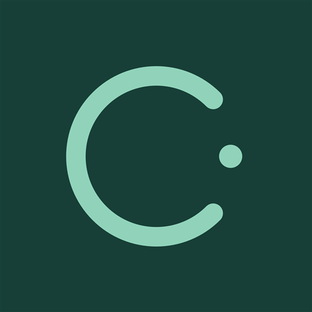
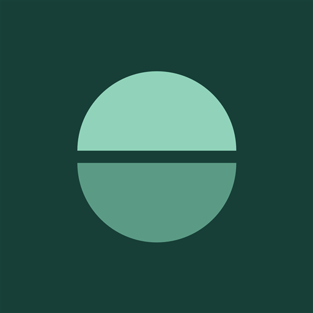

01 · Direção
O C do Compasso encontra uma bússola. Clareza para escolher o próximo passo.
Em tamanho pequeno
Três propostas simples, desenhadas em vetor com as cores do app. O símbolo funciona sozinho no celular e ao lado do nome dentro do Compasso.
O C do Compasso encontra uma bússola. Clareza para escolher o próximo passo.

Mais discretaUm ciclo aberto e um ponto de chegada. Organização sem pressa nem cobrança.

Próxima da marca atualDuas partes que encontram espaço. Rotina e dinheiro com mais equilíbrio.
O ícone usa apenas o símbolo, sem letras pequenas. O próprio celular aplica o recorte dos cantos.
Simulação visual. A aparência final depende do aparelho e do tema.
Abra a página principal do app para adicionar o atalho, em vez desta página de propostas.
Se o atalho antigo continuar mostrando o ícone anterior, adicione novamente a partir da página principal. O novo ícone não instala automaticamente no celular.
Referências: ícone para Safari e manifesto do aplicativo.
Abrir o Compasso →